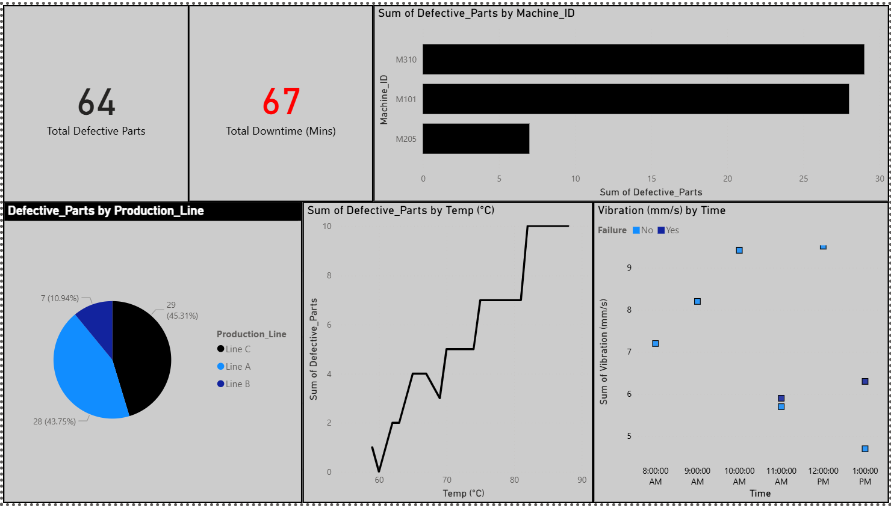

Project Details
This Machine Operations Dashboard is built for sellers who need a clear, professional way to present operational performance. It makes machine activity easier to review, compare, and understand at a glance, helping buyers quickly see where production is performing well and where downtime or defective parts may be affecting output.
Tools Used
Power BI and Power Query.
Key Metrics Included
- Total Defective Parts
- Total Downtime
- Sum of Defective Parts by Machine ID